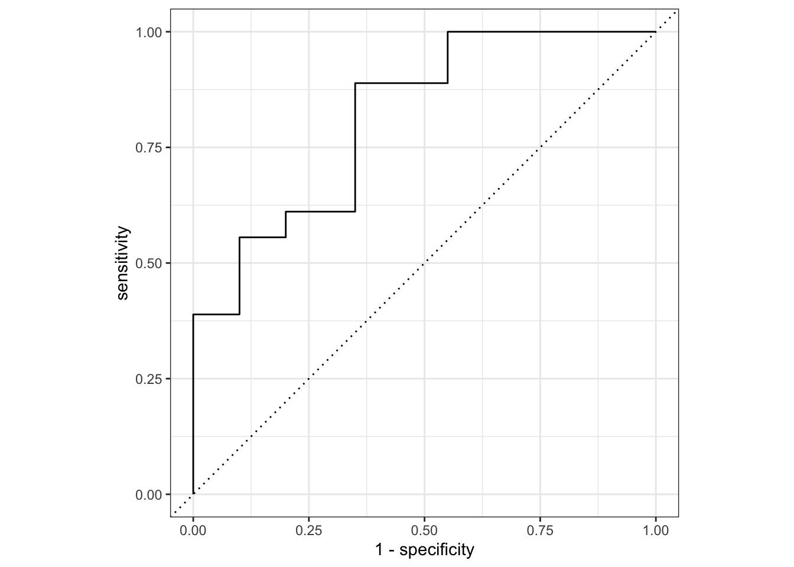
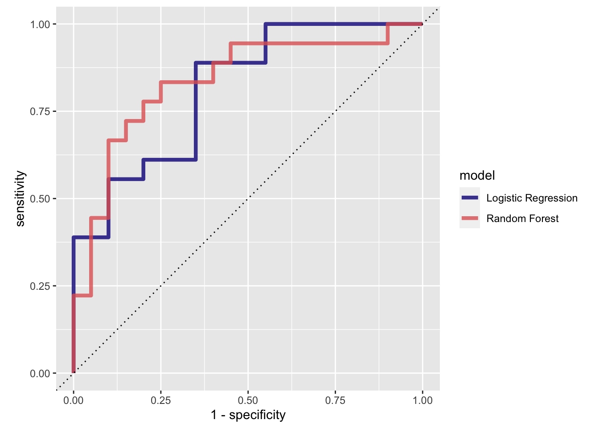
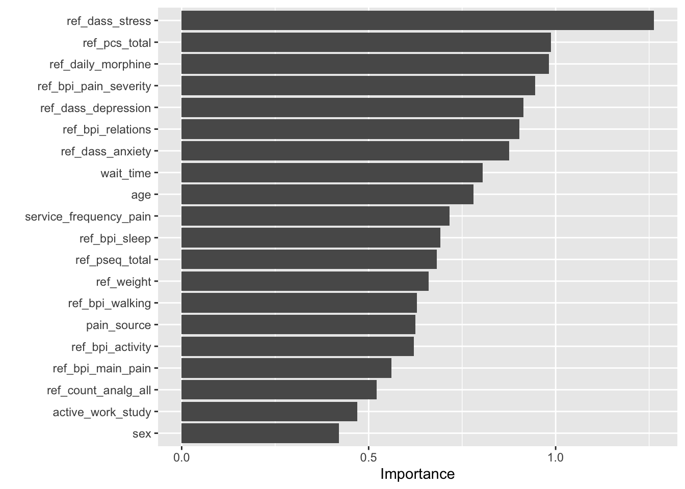
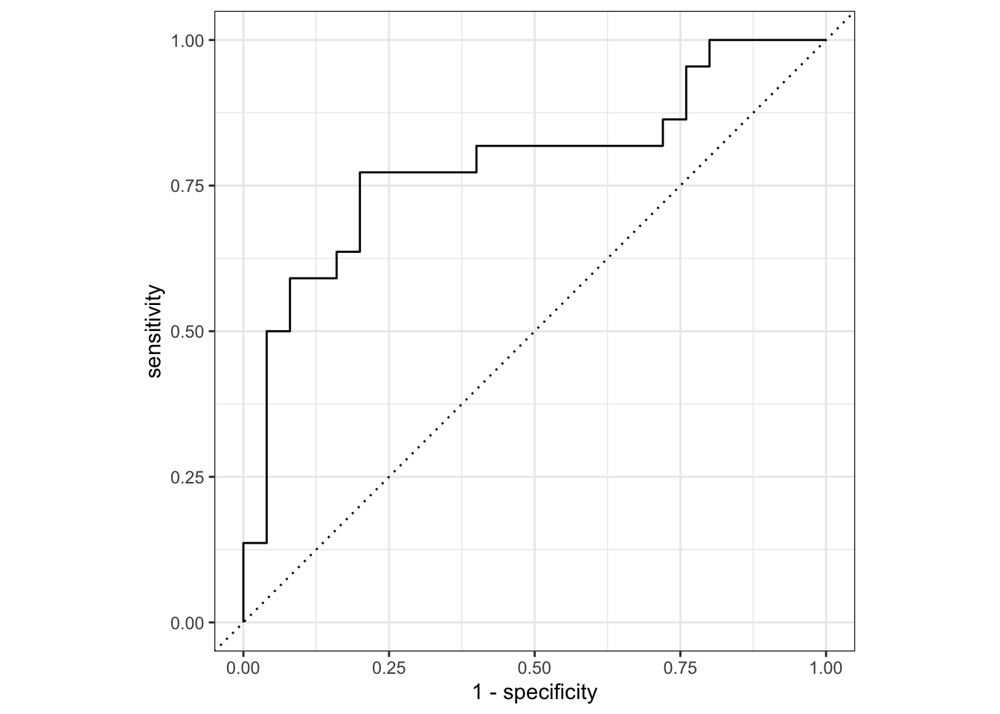

#Glimpse Data
## Rows: 192
## Columns: 30
## $ id <int> 1, 4, 5, 6, 7, 8, 9, 10, 11, 12, 13, 15, 17,…
## $ history_of_depression <int> 1, 0, 0, 1, 0, 0, 0, 1, 0, 1, 0, 1, 0, 0, 1,…
## $ compensation_case <int> 1, 1, 0, 1, 0, 1, 1, 0, 1, 1, 0, 1, 0, 1, 1,…
## $ hearing_sight_impaired <int> 1, 0, 0, 0, 0, 0, NA, 1, 0, 0, 0, 0, 0, 0, 0…
## $ pain_duration <fct> 2-5 years, NA, 12 months-2 years, 2-5 years,…
## $ pain_source <fct> Motor vehicle crash, Injury at work/school, …
## $ ref_bpi_activity <dbl> 8, 9, 7, 7, 4, 6, 7, 9, 8, 8, 6, 8, 7, 7, 7,…
## $ ref_bpi_main_pain <fct> Hip, Back, Back, Back, Back, Hip, Back, Leg,…
## $ ref_bpi_pain_severity <dbl> 6.00, 8.50, 2.25, 7.50, 3.25, 4.75, 4.75, 6.…
## $ ref_bpi_relations <dbl> 8, 8, 4, 7, 3, 3, 6, 6, 5, 8, 5, 4, 7, 7, 7,…
## $ ref_bpi_sleep <dbl> 9, 10, 3, 10, 0, 7, 10, 3, 9, 10, 8, 10, 7, …
## $ ref_bpi_walking <dbl> 8, 8, 1, 5, 6, 0, 7, 7, 6, 8, 8, 0, 7, 6, 7,…
## $ ref_count_analg_all <dbl> 5, 3, 0, 5, 3, NA, NA, 3, 4, 6, 2, 2, 3, 5, …
## $ ref_daily_morphine <dbl> 130, 25, 0, 0, 15, NA, NA, 0, 45, 55, 30, 0,…
## $ ref_dass_anxiety <dbl> 22, 2, 0, 12, 0, 4, 10, 4, 24, 20, 18, 20, 0…
## $ ref_dass_depression <dbl> 42, 20, 8, 22, 4, 6, 40, 22, 40, 26, 4, 22, …
## $ ref_dass_stress <dbl> 42.0000, 14.0000, 12.0000, 22.0000, 0.0000, …
## $ ref_opioid_freq <int> 1, 1, 0, 0, 0, 0, 0, 0, 1, 1, 1, 0, 1, 1, 1,…
## $ ref_pain_description <fct> Always present (intensity varies), NA, Alway…
## $ ref_pcs_total <dbl> 45, 15, 18, 38, 2, 16, 39, 24, 47, 48, 22, 4…
## $ ref_pseq_total <dbl> 15, 16, 29, 12, 27, 27, 15, 23, 5, 12, 19, 9…
## $ ref_weight <dbl> 85, NA, 91, 95, 96, 90, 120, 96, NA, 112, 67…
## $ referral_source <fct> GP/Nurse, Specialist, Specialist, GP/Nurse, …
## $ sex <fct> Male, Male, Male, Male, Female, Male, Male, …
## $ age <dbl> 74.08, 64.79, 56.34, 60.33, 74.89, 59.20, 65…
## $ wait_time <dbl> 26, 202, 94, 105, 60, 0, 0, 28, 97, 154, 5, …
## $ chronic_condition <dbl> 1, 0, 0, 1, 1, 0, 0, 1, 0, 0, 0, 0, 0, 0, 0,…
## $ active_work_study <dbl> 0, 1, 1, 1, 0, 1, 0, 0, 0, 0, 0, 0, 0, 0, 1,…
## $ service_frequency_pain <dbl> 30, 3, 3, 3, 13, 21, 46, 6, 3, 15, 26, 23, 1…
## $ sig_change_self_efficacy <dbl> 0, 0, 1, 1, 0, 0, 0, 1, 0, 1, 1, 1, 1, 0, 1,…lr_recipe<-
recipes::recipe(sig_change_self_efficacy ~ ., data = efficacy_other) %>%
update_role(id, new_role ="ID") %>%
step_knnimpute(all_predictors()) %>%
step_mutate_at(id, sig_change_self_efficacy, history_of_depression, compensation_case, hearing_sight_impaired,ref_opioid_freq, chronic_condition, active_work_study,
fn = as.factor) %>%
step_normalize(all_numeric()) %>%
step_dummy(all_predictors(), -all_outcomes()) %>%
step_nzv(all_predictors())## Warning: The following variables are not factor vectors and will be
## ignored: `ref_bpi_activity`, `ref_bpi_pain_severity`, `ref_bpi_relations`,
## `ref_bpi_sleep`, `ref_bpi_walking`, `ref_count_analg_all`, `ref_daily_morphine`,
## `ref_dass_anxiety`, `ref_dass_depression`, `ref_dass_stress`, `ref_pcs_total`,
## `ref_pseq_total`, `ref_weight`, `age`, `wait_time`, `service_frequency_pain`## Rows: 145
## Columns: 48
## $ id <fct> 1, 4, 5, 6, 7, 8, 10,…
## $ ref_bpi_activity <dbl> 0.2919167, 0.7922468,…
## $ ref_bpi_pain_severity <dbl> -0.0263442, 1.5139415…
## $ ref_bpi_relations <dbl> 0.5320968, 0.5320968,…
## $ ref_bpi_sleep <dbl> 0.70153980, 1.0682423…
## $ ref_bpi_walking <dbl> 0.62260033, 0.6226003…
## $ ref_count_analg_all <dbl> 1.77069508, 0.3537481…
## $ ref_daily_morphine <dbl> 2.34169647, -0.017628…
## $ ref_dass_anxiety <dbl> 0.7819644, -1.1453659…
## $ ref_dass_depression <dbl> 1.66381671, -0.072993…
## $ ref_dass_stress <dbl> 1.68380904, -0.771334…
## $ ref_pcs_total <dbl> 1.3415792, -0.8600265…
## $ ref_pseq_total <dbl> -0.16728119, -0.04463…
## $ ref_weight <dbl> 0.15906700, 0.1492187…
## $ age <dbl> 1.6542864, 0.9875101,…
## $ wait_time <dbl> -0.43739210, 1.303716…
## $ service_frequency_pain <dbl> 1.4262960, -1.0499562…
## $ sig_change_self_efficacy <fct> 0, 0, 1, 1, 0, 0, 1, …
## $ history_of_depression_X1 <dbl> 1, 0, 0, 1, 0, 0, 1, …
## $ compensation_case_X1 <dbl> 1, 1, 0, 1, 0, 1, 0, …
## $ hearing_sight_impaired_X1 <dbl> 1, 0, 0, 0, 0, 0, 1, …
## $ pain_duration_X2.5.years <dbl> 1, 0, 0, 1, 0, 0, 0, …
## $ pain_duration_X3.12.Months <dbl> 0, 0, 0, 0, 0, 0, 1, …
## $ pain_duration_More.than.5.years <dbl> 0, 0, 0, 0, 1, 1, 0, …
## $ pain_source_Injury.at.home <dbl> 0, 0, 0, 0, 0, 0, 0, …
## $ pain_source_Injury.at.work.school <dbl> 0, 1, 0, 1, 0, 0, 0, …
## $ pain_source_Injury.in.another.setting <dbl> 0, 0, 0, 0, 0, 0, 0, …
## $ pain_source_Medical.condition.other.than.cancer <dbl> 0, 0, 0, 0, 0, 0, 0, …
## $ pain_source_Motor.vehicle.crash <dbl> 1, 0, 0, 0, 0, 1, 0, …
## $ pain_source_No.obvious.cause <dbl> 0, 0, 0, 0, 0, 0, 0, …
## $ pain_source_Other.cause <dbl> 0, 0, 1, 0, 1, 0, 1, …
## $ ref_bpi_main_pain_Leg <dbl> 0, 0, 0, 0, 0, 0, 1, …
## $ ref_bpi_main_pain_Hip <dbl> 1, 0, 0, 0, 0, 1, 0, …
## $ ref_bpi_main_pain_Shoulder <dbl> 0, 0, 0, 0, 0, 0, 0, …
## $ ref_bpi_main_pain_Back <dbl> 0, 1, 1, 1, 1, 0, 0, …
## $ ref_bpi_main_pain_Neck <dbl> 0, 0, 0, 0, 0, 0, 0, …
## $ ref_opioid_freq_X1 <dbl> 1, 1, 0, 0, 0, 0, 0, …
## $ ref_pain_description_Often.present <dbl> 0, 0, 0, 0, 1, 0, 0, …
## $ referral_source_Specialist <dbl> 0, 1, 1, 0, 1, 1, 1, …
## $ sex_Male <dbl> 1, 1, 1, 1, 0, 1, 0, …
## $ chronic_condition_X0.2 <dbl> 0, 0, 0, 0, 0, 0, 0, …
## $ chronic_condition_X0.4 <dbl> 0, 0, 0, 0, 0, 0, 0, …
## $ chronic_condition_X0.6 <dbl> 0, 0, 0, 0, 0, 0, 0, …
## $ chronic_condition_X1 <dbl> 1, 0, 0, 1, 1, 0, 1, …
## $ active_work_study_X0.2 <dbl> 0, 0, 0, 0, 0, 0, 0, …
## $ active_work_study_X0.4 <dbl> 0, 0, 0, 0, 0, 0, 0, …
## $ active_work_study_X0.6 <dbl> 0, 0, 0, 0, 0, 0, 0, …
## $ active_work_study_X1 <dbl> 0, 1, 1, 1, 0, 1, 0, …lr_res<-
lr_workflow %>%
tune_grid(val_set,
grid = lr_reg_grid,
control = tune::control_grid(save_pred = TRUE),
metrics = yardstick::metric_set(roc_auc))## ! validation: recipe: The following variables are not factor vectors and will be ignor...## ! validation: model 1/1 (predictions): Novel levels found in column 'pain_duration': N...lr_auc<-
lr_res %>%
tune::collect_predictions(parameters = lr_best) %>%
yardstick::roc_curve(sig_change_self_efficacy,
.pred_0) %>%
dplyr::mutate(model = "Logistic Regression")
tune::autoplot(lr_auc)
## [1] 8rf_recipe<-
recipes::recipe(sig_change_self_efficacy ~ ., data = efficacy_other) %>%
update_role(id, new_role ="ID") %>%
step_knnimpute(all_predictors()) %>%
step_mutate_at(id, sig_change_self_efficacy, history_of_depression, compensation_case, hearing_sight_impaired,ref_opioid_freq, chronic_condition, active_work_study,
fn = as.factor)## Collection of 2 parameters for tuning
##
## id parameter type object class
## mtry mtry nparam[?]
## min_n min_n nparam[+]
##
## Model parameters needing finalization:
## # Randomly Selected Predictors ('mtry')
##
## See `?dials::finalize` or `?dials::update.parameters` for more information.set.seed(345)
rf_res<-
rf_workflow %>%
tune::tune_grid(val_set,
grid = 25,
control = tune::control_grid(save_pred = TRUE),
metrics = yardstick::metric_set(roc_auc))## i Creating pre-processing data to finalize unknown parameter: mtry## ! validation: model 1/25 (predictions): Novel levels found in column 'pain_duration':...## ! validation: model 2/25 (predictions): Novel levels found in column 'pain_duration':...## ! validation: model 3/25 (predictions): Novel levels found in column 'pain_duration':...## ! validation: model 4/25 (predictions): Novel levels found in column 'pain_duration':...## ! validation: model 5/25 (predictions): Novel levels found in column 'pain_duration':...## ! validation: model 6/25 (predictions): Novel levels found in column 'pain_duration':...## ! validation: model 7/25 (predictions): Novel levels found in column 'pain_duration':...## ! validation: model 8/25 (predictions): Novel levels found in column 'pain_duration':...## ! validation: model 9/25 (predictions): Novel levels found in column 'pain_duration':...## ! validation: model 10/25 (predictions): Novel levels found in column 'pain_duration':...## ! validation: model 11/25 (predictions): Novel levels found in column 'pain_duration':...## ! validation: model 12/25 (predictions): Novel levels found in column 'pain_duration':...## ! validation: model 13/25 (predictions): Novel levels found in column 'pain_duration':...## ! validation: model 14/25 (predictions): Novel levels found in column 'pain_duration':...## ! validation: model 15/25 (predictions): Novel levels found in column 'pain_duration':...## ! validation: model 16/25 (predictions): Novel levels found in column 'pain_duration':...## ! validation: model 17/25 (predictions): Novel levels found in column 'pain_duration':...## ! validation: model 18/25 (predictions): Novel levels found in column 'pain_duration':...## ! validation: model 19/25 (predictions): Novel levels found in column 'pain_duration':...## ! validation: model 20/25 (predictions): Novel levels found in column 'pain_duration':...## ! validation: model 21/25 (predictions): Novel levels found in column 'pain_duration':...## ! validation: model 22/25 (predictions): Novel levels found in column 'pain_duration':...## ! validation: model 23/25 (predictions): Novel levels found in column 'pain_duration':...## ! validation: model 24/25 (predictions): Novel levels found in column 'pain_duration':...## ! validation: model 25/25 (predictions): Novel levels found in column 'pain_duration':...## # A tibble: 5 x 7
## mtry min_n .metric .estimator mean n std_err
## <int> <int> <chr> <chr> <dbl> <int> <dbl>
## 1 3 18 roc_auc binary 0.836 1 NA
## 2 10 31 roc_auc binary 0.833 1 NA
## 3 5 28 roc_auc binary 0.831 1 NA
## 4 1 36 roc_auc binary 0.828 1 NA
## 5 7 3 roc_auc binary 0.828 1 NA## # A tibble: 1 x 2
## mtry min_n
## <int> <int>
## 1 3 18## # A tibble: 950 x 7
## id .pred_0 .pred_1 .row mtry min_n sig_change_self_efficacy
## <chr> <dbl> <dbl> <int> <int> <int> <fct>
## 1 validation 0.426 0.574 4 17 22 1
## 2 validation 0.295 0.705 12 17 22 1
## 3 validation 0.509 0.491 18 17 22 1
## 4 validation 0.705 0.295 19 17 22 0
## 5 validation 0.470 0.530 31 17 22 1
## 6 validation 0.548 0.452 39 17 22 0
## 7 validation 0.649 0.351 44 17 22 0
## 8 validation 0.338 0.662 53 17 22 0
## 9 validation 0.585 0.415 55 17 22 0
## 10 validation 0.609 0.391 57 17 22 0
## # … with 940 more rowsdplyr::bind_rows(rf_auc, lr_auc) %>%
ggplot(aes(x = 1 - specificity, y = sensitivity, col = model)) +
geom_path(lwd = 1.5, alpha = 0.8) +
geom_abline(lty = 3) +
coord_equal() +
scale_color_viridis_d(option = "plasma", end = .6)
last_rf_mod<-
parsnip::rand_forest(mtry = 1, min_n =36, trees = 1000) %>%
parsnip::set_engine("ranger", num.threads = cores, importance = "impurity") %>%
parsnip::set_mode("classification")## ! Resample1: model (predictions): Novel levels found in column 'pain_duration': NA. T...## # A tibble: 2 x 3
## .metric .estimator .estimate
## <chr> <chr> <dbl>
## 1 accuracy binary 0.723
## 2 roc_auc binary 0.787last_rf_fit %>%
purrr::pluck(".workflow", 1) %>%
workflows::pull_workflow_fit() %>%
vip::vip(num_feature = 20)
last_rf_fit %>%
tune::collect_predictions() %>%
yardstick::roc_curve(sig_change_self_efficacy, .pred_1) %>%
tune::autoplot()
Session Information:
## ─ Session info ───────────────────────────────────────────────────────────────
## setting value
## version R version 3.6.2 (2019-12-12)
## os macOS Catalina 10.15.1
## system x86_64, darwin15.6.0
## ui X11
## language (EN)
## collate en_AU.UTF-8
## ctype en_AU.UTF-8
## tz Australia/Melbourne
## date 2020-05-10
##
## ─ Packages ───────────────────────────────────────────────────────────────────
## package * version date lib source
## abind 1.4-5 2016-07-21 [1] CRAN (R 3.6.0)
## arm 1.11-1 2020-04-27 [1] CRAN (R 3.6.2)
## assertthat 0.2.1 2019-03-21 [1] CRAN (R 3.6.0)
## backports 1.1.6 2020-04-05 [1] CRAN (R 3.6.2)
## base64enc 0.1-3 2015-07-28 [1] CRAN (R 3.6.0)
## bayesplot 1.7.1 2019-12-01 [1] CRAN (R 3.6.0)
## bayestestR 0.6.0 2020-04-20 [1] CRAN (R 3.6.2)
## boot 1.3-25 2020-04-26 [1] CRAN (R 3.6.2)
## broom * 0.5.6 2020-04-20 [1] CRAN (R 3.6.2)
## broom.mixed 0.2.5 2020-04-19 [1] CRAN (R 3.6.2)
## broomExtra * 4.0.0 2020-04-22 [1] CRAN (R 3.6.2)
## Cairo 1.5-12 2020-04-11 [1] CRAN (R 3.6.2)
## callr 3.4.3 2020-03-28 [1] CRAN (R 3.6.2)
## car * 3.0-7 2020-03-11 [1] CRAN (R 3.6.0)
## carData * 3.0-3 2019-11-16 [1] CRAN (R 3.6.0)
## cellranger 1.1.0 2016-07-27 [1] CRAN (R 3.6.0)
## class 7.3-17 2020-04-26 [1] CRAN (R 3.6.2)
## cli 2.0.2 2020-02-28 [1] CRAN (R 3.6.0)
## coda 0.19-3 2019-07-05 [1] CRAN (R 3.6.0)
## codetools 0.2-16 2018-12-24 [1] CRAN (R 3.6.2)
## colorspace 1.4-1 2019-03-18 [1] CRAN (R 3.6.0)
## colourpicker 1.0 2017-09-27 [1] CRAN (R 3.6.0)
## correlation * 0.2.0 2020-04-09 [1] CRAN (R 3.6.2)
## correlationfunnel * 0.1.0 2019-08-06 [1] CRAN (R 3.6.0)
## corrplot 0.84 2017-10-16 [1] CRAN (R 3.6.0)
## corrr * 0.4.2 2020-03-22 [1] CRAN (R 3.6.0)
## cowplot * 1.0.0 2019-07-11 [1] CRAN (R 3.6.0)
## crayon 1.3.4 2017-09-16 [1] CRAN (R 3.6.0)
## crosstalk 1.1.0.1 2020-03-13 [1] CRAN (R 3.6.0)
## curl 4.3 2019-12-02 [1] CRAN (R 3.6.0)
## data.table 1.12.8 2019-12-09 [1] CRAN (R 3.6.0)
## DBI 1.1.0 2019-12-15 [1] CRAN (R 3.6.0)
## dbplyr 1.4.3 2020-04-19 [1] CRAN (R 3.6.2)
## dials * 0.0.6 2020-04-03 [1] CRAN (R 3.6.2)
## DiceDesign 1.8-1 2019-07-31 [1] CRAN (R 3.6.0)
## digest 0.6.25 2020-02-23 [1] CRAN (R 3.6.0)
## dplyr * 0.8.5 2020-03-07 [1] CRAN (R 3.6.0)
## DT 0.13 2020-03-23 [1] CRAN (R 3.6.0)
## dygraphs 1.1.1.6 2018-07-11 [1] CRAN (R 3.6.0)
## eeptools * 1.2.2 2019-03-19 [1] CRAN (R 3.6.0)
## effectsize 0.3.0 2020-04-11 [1] CRAN (R 3.6.2)
## ellipsis 0.3.0 2019-09-20 [1] CRAN (R 3.6.0)
## evaluate 0.14 2019-05-28 [1] CRAN (R 3.6.0)
## fansi 0.4.1 2020-01-08 [1] CRAN (R 3.6.0)
## farver 2.0.3 2020-01-16 [1] CRAN (R 3.6.0)
## fastmap 1.0.1 2019-10-08 [1] CRAN (R 3.6.0)
## fht 0.0.0.9000 2020-05-10 [1] local
## forcats * 0.5.0 2020-03-01 [1] CRAN (R 3.6.0)
## foreach 1.5.0 2020-03-30 [1] CRAN (R 3.6.2)
## foreign 0.8-72 2019-08-02 [1] CRAN (R 3.6.2)
## Formula 1.2-3 2018-05-03 [1] CRAN (R 3.6.0)
## fs * 1.4.1 2020-04-04 [1] CRAN (R 3.6.2)
## furrr 0.1.0 2018-05-16 [1] CRAN (R 3.6.0)
## future 1.17.0 2020-04-18 [1] CRAN (R 3.6.2)
## generics 0.0.2 2018-11-29 [1] CRAN (R 3.6.2)
## GGally * 1.5.0 2020-03-25 [1] CRAN (R 3.6.0)
## ggplot2 * 3.3.0 2020-03-05 [1] CRAN (R 3.6.0)
## ggridges 0.5.2 2020-01-12 [1] CRAN (R 3.6.0)
## glmnet 3.0-2 2019-12-11 [1] CRAN (R 3.6.0)
## globals 0.12.5 2019-12-07 [1] CRAN (R 3.6.0)
## glue * 1.4.0 2020-04-03 [1] CRAN (R 3.6.2)
## gower 0.2.1 2019-05-14 [1] CRAN (R 3.6.0)
## GPfit 1.0-8 2019-02-08 [1] CRAN (R 3.6.0)
## gridExtra 2.3 2017-09-09 [1] CRAN (R 3.6.0)
## gtable 0.3.0 2019-03-25 [1] CRAN (R 3.6.0)
## gtools 3.8.2 2020-03-31 [1] CRAN (R 3.6.2)
## hardhat 0.1.2 2020-02-28 [1] CRAN (R 3.6.0)
## haven 2.2.0 2019-11-08 [1] CRAN (R 3.6.0)
## hms 0.5.3 2020-01-08 [1] CRAN (R 3.6.0)
## htmltools 0.4.0 2019-10-04 [1] CRAN (R 3.6.0)
## htmlwidgets 1.5.1 2019-10-08 [1] CRAN (R 3.6.0)
## httpuv 1.5.2 2019-09-11 [1] CRAN (R 3.6.0)
## httr 1.4.1 2019-08-05 [1] CRAN (R 3.6.0)
## igraph 1.2.5 2020-03-19 [1] CRAN (R 3.6.0)
## infer * 0.5.1 2019-11-19 [1] CRAN (R 3.6.0)
## inline 0.3.15 2018-05-18 [1] CRAN (R 3.6.0)
## insight 0.8.3 2020-04-20 [1] CRAN (R 3.6.2)
## ipmisc 2.0.0 2020-04-11 [1] CRAN (R 3.6.2)
## ipred 0.9-9 2019-04-28 [1] CRAN (R 3.6.0)
## iterators 1.0.12 2019-07-26 [1] CRAN (R 3.6.0)
## janeaustenr 0.1.5 2017-06-10 [1] CRAN (R 3.6.0)
## janitor * 2.0.1 2020-04-12 [1] CRAN (R 3.6.2)
## jsonlite 1.6.1 2020-02-02 [1] CRAN (R 3.6.0)
## knitr 1.28 2020-02-06 [1] CRAN (R 3.6.0)
## labeling 0.3 2014-08-23 [1] CRAN (R 3.6.0)
## later 1.0.0 2019-10-04 [1] CRAN (R 3.6.0)
## lattice 0.20-41 2020-04-02 [1] CRAN (R 3.6.2)
## lava 1.6.7 2020-03-05 [1] CRAN (R 3.6.0)
## lazyeval 0.2.2 2019-03-15 [1] CRAN (R 3.6.0)
## lhs 1.0.2 2020-04-13 [1] CRAN (R 3.6.2)
## lifecycle 0.2.0 2020-03-06 [1] CRAN (R 3.6.0)
## lime * 0.5.1 2019-11-12 [1] CRAN (R 3.6.0)
## listenv 0.8.0 2019-12-05 [1] CRAN (R 3.6.0)
## lme4 1.1-23 2020-04-07 [1] CRAN (R 3.6.2)
## lmtest 0.9-37 2019-04-30 [1] CRAN (R 3.6.0)
## loo 2.2.0 2019-12-19 [1] CRAN (R 3.6.0)
## lubridate * 1.7.8 2020-04-06 [1] CRAN (R 3.6.2)
## magrittr * 1.5 2014-11-22 [1] CRAN (R 3.6.0)
## maptools 0.9-9 2019-12-01 [1] CRAN (R 3.6.0)
## markdown 1.1 2019-08-07 [1] CRAN (R 3.6.0)
## MASS 7.3-51.6 2020-04-26 [1] CRAN (R 3.6.2)
## Matrix 1.2-18 2019-11-27 [1] CRAN (R 3.6.2)
## matrixStats 0.56.0 2020-03-13 [1] CRAN (R 3.6.0)
## memor * 0.2 2019-01-16 [1] CRAN (R 3.6.0)
## mime 0.9 2020-02-04 [1] CRAN (R 3.6.0)
## miniUI 0.1.1.1 2018-05-18 [1] CRAN (R 3.6.0)
## minqa 1.2.4 2014-10-09 [1] CRAN (R 3.6.0)
## mnormt 1.5-6 2020-02-03 [1] CRAN (R 3.6.0)
## modelr 0.1.7 2020-04-30 [1] CRAN (R 3.6.2)
## munsell 0.5.0 2018-06-12 [1] CRAN (R 3.6.0)
## naniar * 0.5.1 2020-04-30 [1] CRAN (R 3.6.2)
## nlme 3.1-147 2020-04-13 [1] CRAN (R 3.6.2)
## nloptr 1.2.2.1 2020-03-11 [1] CRAN (R 3.6.0)
## nnet 7.3-14 2020-04-26 [1] CRAN (R 3.6.2)
## openxlsx 4.1.4 2019-12-06 [1] CRAN (R 3.6.0)
## parameters 0.6.1 2020-04-08 [1] CRAN (R 3.6.2)
## parsnip * 0.1.0 2020-04-09 [1] CRAN (R 3.6.2)
## patchwork * 1.0.0 2019-12-01 [1] CRAN (R 3.6.0)
## performance 0.4.5 2020-03-28 [1] CRAN (R 3.6.2)
## PerformanceAnalytics * 2.0.4 2020-02-06 [1] CRAN (R 3.6.0)
## pillar 1.4.4 2020-05-05 [1] CRAN (R 3.6.2)
## pkgbuild 1.0.7 2020-04-25 [1] CRAN (R 3.6.2)
## pkgconfig 2.0.3 2019-09-22 [1] CRAN (R 3.6.0)
## plotly * 4.9.2.1 2020-04-04 [1] CRAN (R 3.6.2)
## plyr 1.8.6 2020-03-03 [1] CRAN (R 3.6.0)
## prettyunits 1.1.1 2020-01-24 [1] CRAN (R 3.6.0)
## pROC 1.16.2 2020-03-19 [1] CRAN (R 3.6.0)
## processx 3.4.2 2020-02-09 [1] CRAN (R 3.6.0)
## prodlim 2019.11.13 2019-11-17 [1] CRAN (R 3.6.0)
## promises 1.1.0 2019-10-04 [1] CRAN (R 3.6.0)
## ps 1.3.2 2020-02-13 [1] CRAN (R 3.6.0)
## psych * 1.9.12.31 2020-01-08 [1] CRAN (R 3.6.0)
## purrr * 0.3.4 2020-04-17 [1] CRAN (R 3.6.2)
## quadprog 1.5-8 2019-11-20 [1] CRAN (R 3.6.0)
## Quandl 2.10.0 2019-06-12 [1] CRAN (R 3.6.0)
## quantmod * 0.4.17 2020-03-31 [1] CRAN (R 3.6.2)
## R6 2.4.1 2019-11-12 [1] CRAN (R 3.6.0)
## ranger 0.12.1 2020-01-10 [1] CRAN (R 3.6.0)
## RColorBrewer 1.1-2 2014-12-07 [1] CRAN (R 3.6.0)
## Rcpp 1.0.4 2020-03-17 [1] CRAN (R 3.6.0)
## readr * 1.3.1 2018-12-21 [1] CRAN (R 3.6.0)
## readxl * 1.3.1 2019-03-13 [1] CRAN (R 3.6.0)
## recipes * 0.1.12 2020-05-01 [1] CRAN (R 3.6.2)
## repr 1.1.0 2020-01-28 [1] CRAN (R 3.6.2)
## reprex 0.3.0 2019-05-16 [1] CRAN (R 3.6.2)
## reshape 0.8.8 2018-10-23 [1] CRAN (R 3.6.0)
## reshape2 1.4.4 2020-04-09 [1] CRAN (R 3.6.2)
## rio 0.5.16 2018-11-26 [1] CRAN (R 3.6.0)
## rlang * 0.4.6.9000 2020-05-08 [1] Github (r-lib/rlang@4bea875)
## rmarkdown * 2.1 2020-01-20 [1] CRAN (R 3.6.0)
## rpart 4.1-15 2019-04-12 [1] CRAN (R 3.6.2)
## rsample * 0.0.6 2020-03-31 [1] CRAN (R 3.6.2)
## rsconnect 0.8.16 2019-12-13 [1] CRAN (R 3.6.2)
## rstan 2.19.3 2020-02-11 [1] CRAN (R 3.6.0)
## rstanarm 2.19.2 2019-10-03 [1] CRAN (R 3.6.0)
## rstantools 2.0.0 2019-09-15 [1] CRAN (R 3.6.0)
## rstatix * 0.5.0 2020-04-28 [1] CRAN (R 3.6.2)
## rstudioapi 0.11 2020-02-07 [1] CRAN (R 3.6.0)
## rvest 0.3.5 2019-11-08 [1] CRAN (R 3.6.0)
## scales * 1.1.0 2019-11-18 [1] CRAN (R 3.6.0)
## sessioninfo 1.1.1 2018-11-05 [1] CRAN (R 3.6.0)
## shape 1.4.4 2018-02-07 [1] CRAN (R 3.6.0)
## shiny 1.4.0.2 2020-03-13 [1] CRAN (R 3.6.0)
## shinyjs 1.1 2020-01-13 [1] CRAN (R 3.6.0)
## shinystan 2.5.0 2018-05-01 [1] CRAN (R 3.6.0)
## shinythemes 1.1.2 2018-11-06 [1] CRAN (R 3.6.0)
## skimr * 2.1.1 2020-04-16 [1] CRAN (R 3.6.2)
## snakecase 0.11.0 2019-05-25 [1] CRAN (R 3.6.0)
## SnowballC 0.7.0 2020-04-01 [1] CRAN (R 3.6.2)
## sp 1.4-1 2020-02-28 [1] CRAN (R 3.6.0)
## StanHeaders 2.21.0-1 2020-01-19 [1] CRAN (R 3.6.0)
## statmod 1.4.34 2020-02-17 [1] CRAN (R 3.6.0)
## stringi 1.4.6 2020-02-17 [1] CRAN (R 3.6.0)
## stringr * 1.4.0 2019-02-10 [1] CRAN (R 3.6.0)
## survival 3.1-12 2020-04-10 [1] CRAN (R 3.6.2)
## table1 * 1.2 2020-03-23 [1] CRAN (R 3.6.0)
## threejs 0.3.3 2020-01-21 [1] CRAN (R 3.6.0)
## tibble * 3.0.1 2020-04-20 [1] CRAN (R 3.6.2)
## tidymodels * 0.1.0 2020-02-16 [1] CRAN (R 3.6.0)
## tidyposterior 0.0.2 2018-11-15 [1] CRAN (R 3.6.0)
## tidypredict 0.4.5 2020-02-10 [1] CRAN (R 3.6.0)
## tidyquant * 1.0.0 2020-03-04 [1] CRAN (R 3.6.0)
## tidyr * 1.0.2 2020-01-24 [1] CRAN (R 3.6.0)
## tidyselect 1.0.0 2020-01-27 [1] CRAN (R 3.6.0)
## tidytext 0.2.4 2020-04-17 [1] CRAN (R 3.6.2)
## tidyverse * 1.3.0 2019-11-21 [1] CRAN (R 3.6.0)
## timeDate 3043.102 2018-02-21 [1] CRAN (R 3.6.0)
## TMB 1.7.16 2020-01-15 [1] CRAN (R 3.6.0)
## tokenizers 0.2.1 2018-03-29 [1] CRAN (R 3.6.0)
## TTR * 0.23-6 2019-12-15 [1] CRAN (R 3.6.0)
## tune * 0.1.0 2020-04-02 [1] CRAN (R 3.6.2)
## usethis * 1.6.1 2020-04-29 [1] CRAN (R 3.6.2)
## utf8 1.1.4 2018-05-24 [1] CRAN (R 3.6.0)
## vcd 1.4-7 2020-04-02 [1] CRAN (R 3.6.2)
## vctrs 0.3.0 2020-05-08 [1] Github (r-lib/vctrs@5b71d88)
## vip * 0.2.2 2020-04-06 [1] CRAN (R 3.6.2)
## viridisLite 0.3.0 2018-02-01 [1] CRAN (R 3.6.0)
## visdat 0.5.3 2019-02-15 [1] CRAN (R 3.6.0)
## withr 2.2.0 2020-04-20 [1] CRAN (R 3.6.2)
## workflows * 0.1.1 2020-03-17 [1] CRAN (R 3.6.0)
## xfun 0.13 2020-04-13 [1] CRAN (R 3.6.2)
## xml2 1.3.2 2020-04-23 [1] CRAN (R 3.6.2)
## xtable 1.8-4 2019-04-21 [1] CRAN (R 3.6.0)
## xts * 0.12-0 2020-01-19 [1] CRAN (R 3.6.0)
## yaml 2.2.1 2020-02-01 [1] CRAN (R 3.6.2)
## yardstick * 0.0.6 2020-03-17 [1] CRAN (R 3.6.0)
## zeallot 0.1.0 2018-01-28 [1] CRAN (R 3.6.0)
## zip 2.0.4 2019-09-01 [1] CRAN (R 3.6.0)
## zoo * 1.8-7 2020-01-10 [1] CRAN (R 3.6.0)
##
## [1] /Library/Frameworks/R.framework/Versions/3.6/Resources/libraryCopyright © 2020 Timothy Deitz | University Of Melbourne. All rights reserved.